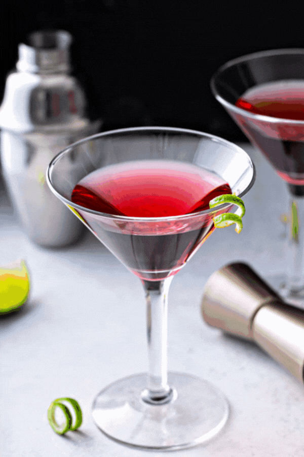

Cosmopolitan
Prep time :
5 minutes
Yield :
1
Ingredients
1 1/2 oz Vodka
1/2 oz Cranberry juice
3/4 oz Lime juice
3/4 oz Cointreau L'unique
Steps
Combine all ingredients in shaker tin
Add ice
Shake vigorously, until tin is frosted over.
Strain into chilled cocktail glass
Garnish with lime twist and enjoy.